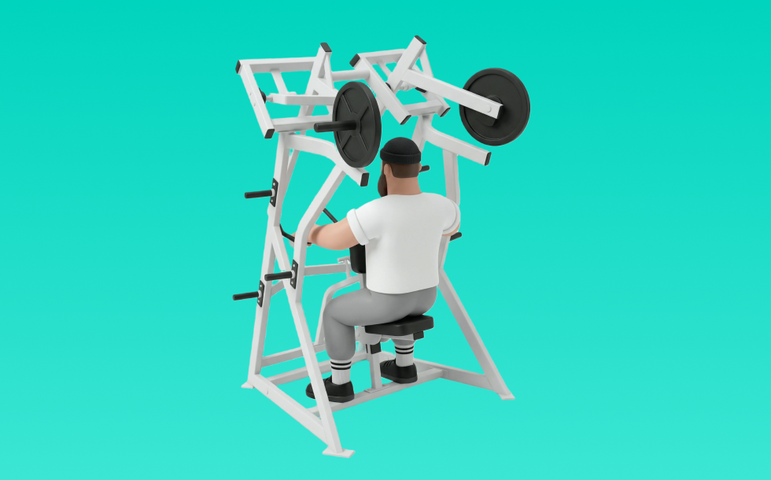

D.Y.ロウ

D.Y.ロウとは、ドリアン・イェーツの名に由来する背中を鍛えるマシンロウで、左右独立して動作できるアイソラテラル方式が特徴です。胸パッドに腹部をつけ、背中を伸ばした状態から肘を後ろへ引き、収縮を得て戻す動作を繰り返します。背中の厚みと広がり作りに効果的です。
- 対象部位
- 背中
- 器具
- マシン
- 記録形式
- 重量・回数
- 別名
- DYロウ / Dorian Yates Row / DY row
YouTube動画
-
DYロウを使ってみよう！ワンハンドバージョン！
-
【広背筋 or 僧帽筋？】同じ種目で効かせ方が激変！アイソラテラルロウ徹底解説
-
筋トレ初心者が最初に覚えるべき背中トレのマシン使い方解説【エニタイムフィットネス】
-
【背中トレ】DYロウ~マシンフロントプル
-
D-FIT住道店 DYロウ 使い方解説🔰 ＃ジム＃ジムトレ #dfit住道店 #背中トレ
-
DYロウ
-
シーテッドロウで狙い分け！広背筋を狙う場合と僧帽筋を狙う場合の引き方解説
-
厚みをつける背中トレ。シーテッドロウ・DYロウ解説
-
背中が苦手な人は両手の種目をやってください。
-
トレーナーが解説！姿勢改善に効果的な「シーテッドロウ」の使い方！
-
PLATE-LOADED DYロウ（トレーニング動画）
-
【背中トレ】マシンの使い方 ローイング
-
広背筋を鍛えるダンベルロウイングのやり方【筋トレ】
-
【背中の基礎種目】この引き方の“シーテッドロー”はもったいないです。
-
背中 筋トレマシン使い方【アイソラテラル・D.Y.ロー（HAMMER STRENGTH）】
-
シーテッドローの効果的なやり方｜背中に効かせる3つのポイント
-
【広背筋下部の改善】誰も解説してない… あのマル秘種目を徹底解説！
-
ReXeR南青山D.Yロー
-
【広背筋下部】爆熱に刺激を与える種目‼️【DYロー】徹底解説！亀の甲羅はこうやって作る‼️
-
【筋トレ】「背中を丸めるロウイング」で広背筋が発達する唯一無二の理由とは！
-
背中の筋肥大に最も良い種目は？【背中のティアリスト】
YouTubeショート
-
【忙しい人向け】1日30分で鬼の背中を作るトレーニング#shorts #youtubeshorts ##筋トレ大学#ダイエット#筋トレ
-
正しいシーテッドローのやり方 | ボディビル日本チャンピオンが解説 #shorts 【ビーレジェンド プロテイン】
-
【IFBB PRO 上里選手】筋トレ初心者必見!!背中種目で注意すべきこと
-
DYロウもっと流行ればいいのに
-
マシンロー効果的な方法！構造から学ぶ #ローイング #広背筋 #背中トレ
-
持田選手とハムちゃんにワンハンドローにについてレクチャーしていてもらいました！次はどの種目の解説をやってほしいかコメントしてね！#筋トレ #volix #ちょこっと惜しい
-
背中を最大限に鍛える種目3選【筋トレ】
-
ローイングマシンの使い方って？持田選手（おかずもち）がローイングマシンのやり方を2種類レクチャーしてくれました！#筋トレ #volix #広背筋 #ちょこっと惜しい #背中トレ
-
アイソラテラルロウは広背筋の中部や下部や僧帽筋を集中的に鍛えることが出来る非常に優れた種目です。是非やってみて下さーい！#背中トレ #筋トレ動画 #美ボディ
-
【筋トレ】初心者向け🔰エニタイムで背中トレ！
-
マシンローイングの正しいやり方 | ボディビル日本チャンピオンが解説 #shorts【ビーレジェンド プロテイン】
-
【正しい筋トレレクチャー】マシンローローで広背筋を効かせるコツ #ショート
-
持田選手にベントオーバーローについてレクチャーしていてもらいました！次はどの種目の解説をやってほしいかコメントしてね！#筋トレ #volix #トレーニング #fitness #workout
-
DYロウ (背中)
-
背中が痛くなるくらい効くワンハンドローのやり方※エゴイスト
-
背中の厚みをつける！正しいシーテッドローのやり方 #筋トレ #shorts #ジム #筋トレ初心者 #井上拓哉筋トレチャンネル
-
マシンの使い方紹介【ローイング】（背中）
-
【チェストサポートロウ】怪我をせず僧帽筋を鍛える正しいフォーム解説
-
山岸秀匡の背中トレ理論をカネキンに伝授
-
背中をデカくする背中トレ7種目🔥#筋トレ #背中トレ #デッドリフト
-
【ラットプルダウン】背中に効かない3つの間違い #パーソナルトレーナー #筋トレ #ラットプルダウン #フィットネス
-
どこでもできる最高なpullトレーニング
-
個人的に最も効果のある背中の種目3つを紹介 #筋トレ #フィットネス
-
背中が鬼になる3種目をガチで教えます。#shorts
-
持田選手にロープーリーについてレクチャーしていてもらいました！次はどの種目の解説をやってほしいかコメントしてね！#筋トレ #volix #トレーニング #fitness
-
俺みたいなデカイ背中を作るオススメトレ5選！#shorts
動作方法
- 体幹を安定させ、背中が丸まらない姿勢を作る
- 肘を後方へ引き、肩甲骨を寄せる
- 勢いを使わず、ゆっくり戻す
動作ポイント
- 背中を丸めない
- 首に力を入れすぎない
- 戻しを速くしすぎない
ワンポイントアドバイス
- 腕ではなく背中で引く感覚を優先する
- 反動が増えたら重量を一段下げる
目的別回数設定
目的や体力に応じた一般的な目安です。無理のない範囲で調整してください。
- 筋力アップ
- 1〜5回
- 筋肥大
- 6〜12回
- 持久力アップ
- 13〜20回
YouTube動画について
動画はYouTubeの公開情報をもとに表示しています。内容は投稿者によるもので、Biggrによる監修ではありません。
アプリを入手
筋トレやトレーニングの記録はBiggrにお任せください。今すぐ無料で使い始められます。